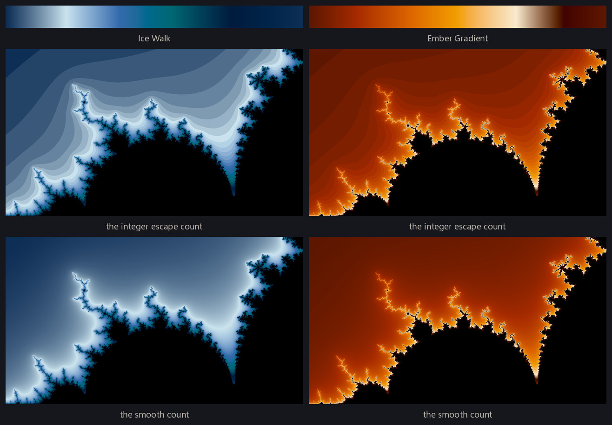
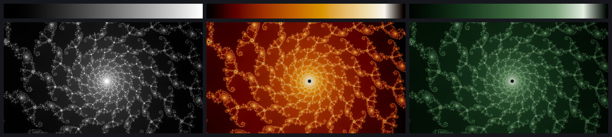
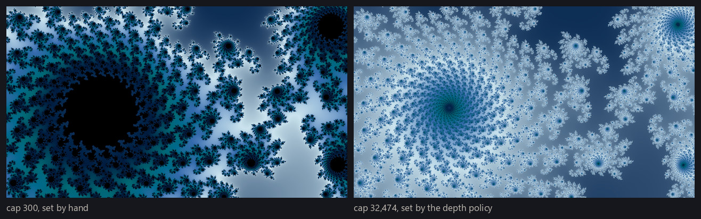
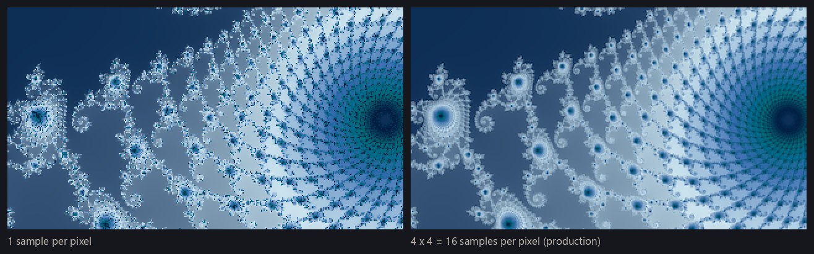
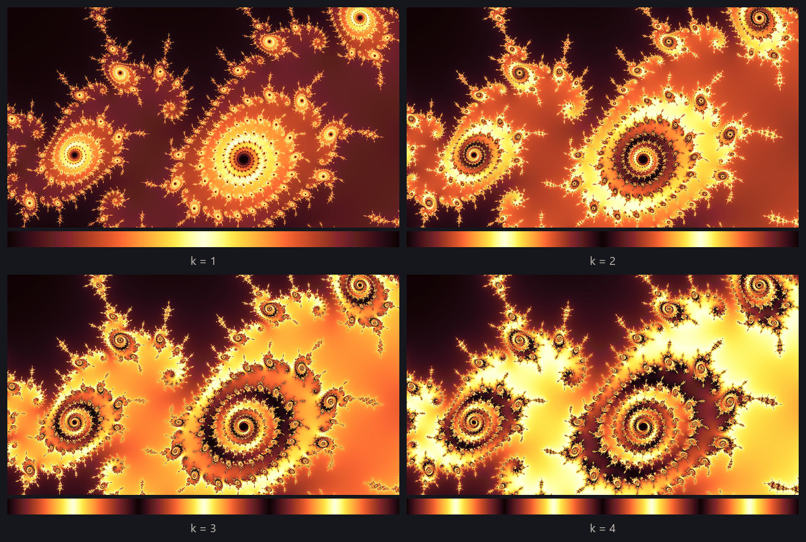
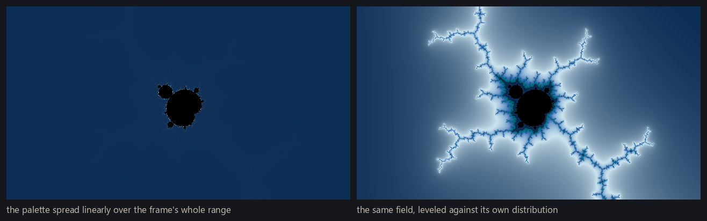

Escape-time fractals produces, for a given location in a fractal, a 2D grid of integer escape counts — one per pixel, each the number of steps that pixel's orbit took to escape, or a special "infinite" label indicating the orbit never escaped. This page covers the fundamentals of rendering: how those integer counts become a smooth field, what the iteration cap and the sample count each decide, and how that field becomes a finished image, with the palette fitted to the frame rather than to the arithmetic. The smooth fields look beautiful in their own right, and they are also the foundation the more advanced rendering modes build on. Throughout, we'll assume we're already handed a one-dimensional color palette; color palettes covers how a good palette is chosen for each image.
From counts to colors
The simplest rendering method maps the integer escape time straight to color. A palette is colors laid along a number line — dark blue at zero, say, sweeping toward white at a hundred — so paint each pixel with the color that sits at its escape count. This works, and it is how most first Mandelbrot programs are written. But the count is an integer: a pixel that escaped in 40 steps and its neighbor that escaped in 41 land on two flatly different colors with a hard edge between them, and the whole image comes out terraced into bands of solid color instead of continuous shading.

The smooth iteration count
To convert the discrete escape time into a continuous one, start from what the integer count discards. It records that the orbit crossed the escape radius during step 40 — not whether it barely crossed or shot far past, which is exactly the missing fractional part. And that fraction is recoverable from the orbit's final value. Once |z| is large, the squaring dominates the update, so each further step roughly squares |z|. Squaring |z| doubles log |z|, and doubling log |z| adds one to log log |z| — so log log |z| behaves like a clock that ticks once per iteration. Reading that clock at the moment of escape tells you where within the final step the crossing really happened, and gives the classic smooth iteration count:
smooth = n + 1 − log2(log2 |z|)
where n is the integer count and z is the orbit's value when the loop stopped. The subtracted term lands between 0 and 1 and supplies the fractional part, and the convention is arranged so that the floor of the smooth count is the integer count, exactly. The same idea covers the multibrot families, with the logarithm adjusted to the degree. One practical wrinkle: the formula is only accurate when the orbit has traveled well past the escape circle before the loop stops, so the engine tests escape against a radius comfortably larger than the mathematical minimum of 2 — radius 2 is enough to decide escape, but measuring it smoothly wants more room.
Rendered this way, the terraces melt into continuous ramps. Each pixel now carries one continuously varying number — a floating-point field — and turning that field into colors is a separate, later decision. This page is about producing good fields; rendering modes covers converting fields into different rendering styles.

Iteration caps
The introduction's special infinite label is the loop's remaining problem: points inside the set never escape, so left alone the loop would run on them forever. In practice, infinite means a cap was reached. Every renderer picks one — iterate each orbit at most N steps — and any orbit still bounded after N steps is declared interior and painted with the flat interior tone.
The choice matters more than it first appears. Too low a cap misclassifies: points near the boundary that would have escaped at step 5,000 get declared interior, the flat region swells outward, and it swallows exactly the filigree the image exists to show. Too high a cap is pure cost, and the cost lands unevenly — a pixel that escapes in a dozen steps is indifferent to the cap, but every pixel that reaches it pays for it in full, so a frame with real interior in view gets linearly more expensive as the cap climbs.
The right cap also depends on the zoom. The deeper the magnification, the closer the frame presses against the boundary and the longer typical orbits wander before escaping — and those long-wandering regions are often where escape-time fractals are at their most beautiful. So the engine needs to raise the cap automatically as the frame width shrinks — logarithmically, each halving of the width buying a constant increment of extra steps — clamped between a floor and a ceiling.

Supersampling
Everything so far computes one orbit per pixel, from the pixel's center. But a pixel is not a point — it is a small rectangle of the complex plane, and near the boundary the fractal has structure far below pixel scale, at every scale. A single sample through the middle of that rectangle is a coin flip: filaments thinner than a pixel show up as scattered speckle, and fine features shimmer or break apart. This is aliasing, the same phenomenon that puts staircase edges on computer-drawn lines.
The cure is supersampling: compute several orbits at different positions inside each pixel's rectangle and average them. It multiplies the render's cost by the number of samples — a costly step, but a critical one: averaging real samples is what separates a crisp wallpaper from a noisy one, and no later step can put back detail the sampling missed.

Dynamic range
The field that comes out of all this is numerically wild. Near the boundary, values climb toward the cap itself — thousands of steps — while most of the frame escapes almost immediately, and the structure worth looking at is often compressed into a thin slice of that range. Map the palette across that whole range linearly — lowest value at one end, the cap at the other — and most of the palette goes unused: the image reads as a nearly flat wash with a bright seam along the boundary.
Fractal software has classic escapes from this squeeze. The most common is to repeat the palette — cycle it every fixed number of steps, or mirror it end-to-end so the repeats join smoothly — so that no single sweep of the palette has to cover the whole range. That is why so many classic Mandelbrot renders look striped with rings of repeating color.

This project keeps repetition but removes the guesswork underneath it. A data-driven leveling step examines the distribution of values actually present in the frame and sets the working range from that distribution rather than from the theoretical extremes — the automatic cousin of dragging the levels sliders in a photo editor. The operator is a percentile stretch: the 0.5th and 99.5th percentiles of the frame's own values become the two ends of the working range, and the half a percent past each end is clipped flat. How many times the palette sweeps that leveled range is then one of the palette settings a render records, covered in color palettes, rather than a fixed step guessed against an unknown range. This leveling acts on the field, before any color exists; the finished, colored image gets its own gentler level adjustment later in the pipeline.

The smooth rendering
Taken together, a render is a location plus a short list of choices: iterate to an automatically chosen cap, keep smooth values rather than integer counts, sample each pixel several times, level the field against its own distribution, and map a palette across it. What this produces is the project's smooth rendering — the clean, classic look of these fractals — and it is one style among several. Rendering modes catalogs the others, built on the same machinery, and color palettes covers how the palette itself is chosen.